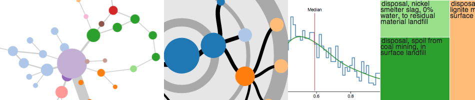

Brightway2 is a new open source framework for advanced life cycle assessment calculations. It is designed to be easy to use, while still being powerful.
Introduction | Motivation | Principles | Technology | Contributing | Credits
Introduction ¶
Brightway2 is a completely new program for calculating life cycle assessments (LCA). Its core principles are simplicity, innovation, and power. It can be installed on Windows, OS X, and Linux, and has a web interface.
Motivation ¶
The pace of innovation in software can be overwhelming, but one would struggle to call any existing LCA software truly innovative. User interfaces are painfully dated, calculations are slow and poorly documented, and new ways of consuming information such as the web are ignored. Brightway2 is not trying to replace software such as OpenLCA or SimaPro. Instead, it is designed for individual analysts to do cutting edge calculations on their computers, their servers, or in the cloud, and to push the state of the art in LCA result visualization.
Only Brightway2 can:
- Compute thousands of LCAs in a few lines of code, and easily graph the results.
- Perform Monte Carlo uncertainty analysis in under a minute, and automatically export the results.
- Automatically upload LCA reports to a private webserver or the Brightway2 reports server.
Principles ¶
- Simplicity. Large and complex software is hard to test for correctness, hard to work with, and hard to improve. Brightway2 is designed to be simple in every aspect: different functions are split into different software packages, making it easier to understand and test; lean data structures make it easier to focus only on what is truly important; a user interface with fewer functions makes it easy to find the right button, and hard to make mistakes.
- Open development. All code in Brightway2 is open source, and made available under the liberal BSD license. Moreover, all development happens on bitbucket, an online source repository. The test coverage reports for Brightway2 are also online. Even this web page is open source!
- Agile. The simplicity of the data format and calculation engine make it easy to adapt the code or add new functionality.
- Documents. A inventory dataset is a document with a few required fields, like unit, but otherwise can be adapted to whatever format you need for your particular model or problem domain. Simple documents can be easily converted to and from other formats.
- Small. Brightway2 isn't a full corporate LCA program with facilities for managing teams and permissions. Instead, it is focused on the critical areas where it can be better: calculations and visualization. If you want to share data with a friend, it takes only a few clicks to export a bw2package file.
- Modular. Each set of functions is split into a package, with its own tests and documentation (see the list of packages below). Modularity makes it easier to understand and test, and dramatically decreases the activation energy needed for someone to contribute to this open source project.
Technology ¶

Software used:
- python (2.7)
- D3.js
- jquery & jquery UI
- scipy & numpy
- bw-stats-toolkit
- docopt
- voluptuous
- flask
BW2 packages:
Brightway2 is designed to be simple, so let's start by talking about what it doesn't have. First, it doesn't have an SQL, or even NoSQL, database. Because it is not designed for teams, the costs of installing, tuning, and maintaining a database are not worth it. Instead, data is saved as documents in a data directory, which means that they can be easily backed up, or even put on Dropbox. No database also means that installation is quicker and easier.
Brightway2 is written primarily in Python, and uses the fantastic NumPy and SciPy libraries for matrix algebra. Although Python is not a fast language, Brightway2 can perform LCA calculations quickly: a single calculation takes around one tenth of a second, and Monte Carlo uncertainty analysis on a large scale is quick. On a 2011 laptop, around 100 iterations a second are possible.
Result graphics are displayed using D3.js. D3 is just an amazing library - powerful, yet simple to understand and easy to tinker with. For example, the built-in graphics for Brightway2 can be edited online in tributary.io, e.g. supply chain circles, and the complete list is here. New visualizations offer new possibilities for both experienced LCA practitioners and lay people to understand the results of LCA studies.
Contributing ¶
Brightway2 is an open source project, released under the BSD license, and all code is hosted online. You don't have to be a programmer to help make small improvements, however! I am not a programmer, but taught myself a bit about Python during my studies. Here is how you (yes, you) can help:
- If you see something broken, even just here in the documentation, file a bug report.
- If you have some ideas for making things better, file an enhancement request (click on Kind to switch to enhancement).
- If you are comfortable working with computers, look at the list of harder problems and see if there is one which fits your interests.
- Help write documentation and tutorials.
- If you know a little about web pages, you can help improve existing visualizations or create new ones. Web visualizations are primarily made in D3.js, which is both easy to work with and insanely productive. See the guide for more information.
- If you aren't sure about any of the options, feel free to get in touch: cmutel@gmail.com.
See the guide to contributing for more information, including easy projects for non-programmers, and a detailed list of possible improvements.
Credits ¶
Brightway2 was created by Chris Mutel during his postdoctoral work at the group for Ecological Systems Design, led by Professor Stefanie Hellweg, and was funded by the Swiss National Science Foundation and ETH Zürich.
This webpage by Chris Mutel is licensed  , except header globe image.
, except header globe image.